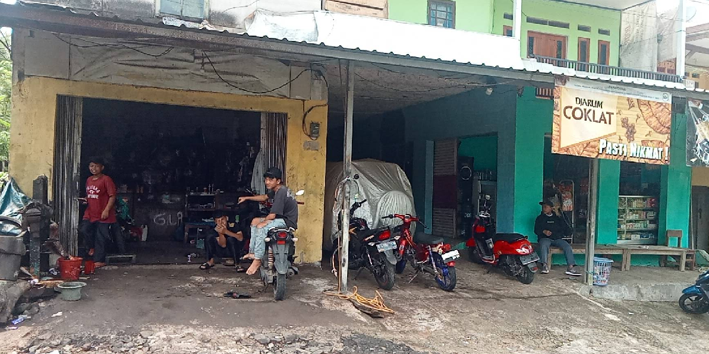
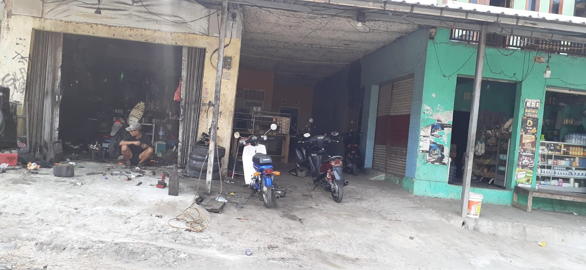
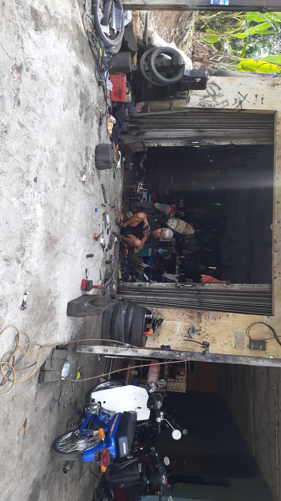
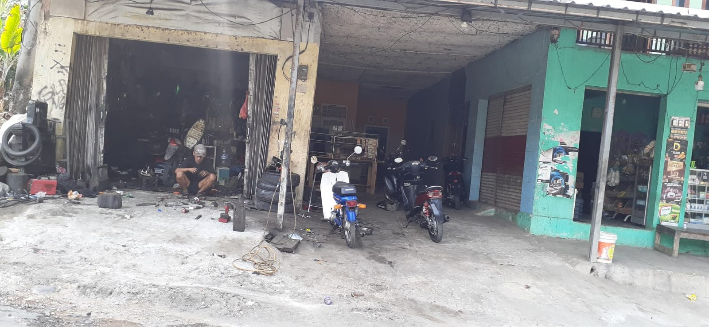

Bengkel Motor Terpercaya di Sagaranten
Servis cepat, harga terjangkau, kualitas terjamin
Tentang Kami
Bengkel Aprax adalah bengkel motor terpercaya yang telah melayani masyarakat Sagaranten dan sekitarnya dengan komitmen memberikan pelayanan terbaik. Dengan pengalaman bertahun-tahun, kami memahami kebutuhan motor Anda dan memberikan solusi servis yang profesional.
Kami berdedikasi untuk menjaga motor Anda dalam kondisi prima dengan menggunakan suku cadang berkualitas dan teknisi yang berpengalaman.
Mekanik Berpengalaman
Tim mekanik profesional dengan pengalaman lebih dari 10 tahun
Harga Transparan
Tidak ada biaya tersembunyi, harga jelas dan terjangkau
Pelayanan Cepat
Servis selesai tepat waktu tanpa mengurangi kualitas
Layanan Kami
Servis Mesin
Perbaikan dan maintenance mesin motor untuk performa optimal
Ganti Oli
Penggantian oli mesin dengan produk berkualitas
Tambal Ban
Perbaikan ban bocor dan penggantian ban baru
Tune Up
Penyetelan mesin untuk efisiensi bahan bakar
Kelistrikan Motor
Perbaikan sistem kelistrikan dan aki motor
Spare Part
Penjualan suku cadang motor original dan berkualitas
Galeri Bengkel




Lokasi Kami
Alamat
QVMX+528, Baros-Cikadu, Sagaranten, Kec. Sagaranten, Kabupaten Sukabumi, Jawa Barat 43181
🕐 Jam Operasional
Senin - Minggu
07:00 - 16:00